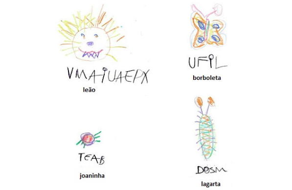
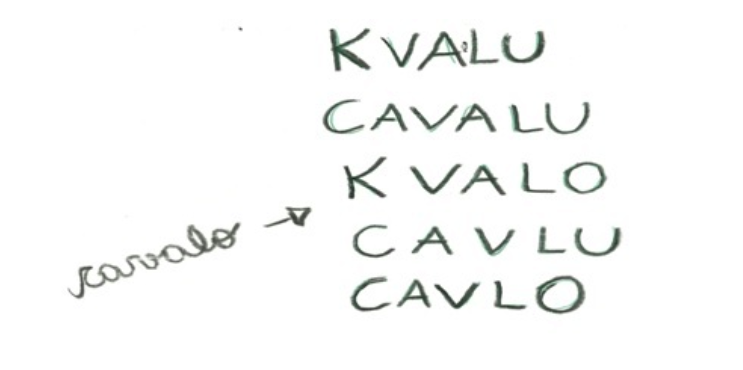
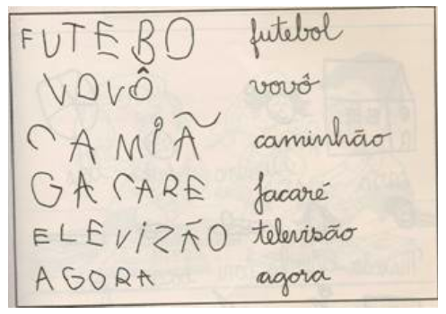

De acordo com Morais (2012), o conhecimento da correspondência entre letra e som perpassa, conforme a teoria da psicogênese, por mais de um nível e neste percurso evolutivo, o alfabetizando formula respostas (hipóteses) diferentes para as seguintes questões:
1. O que as letras representam (ou notam, ou substituem)?
No início da alfabetização, o alfabetizando não sabe, ainda, que as letras representam ou notam a pauta sonora (sequência de pedaços sonoros) das palavras que falamos.
Nesta etapa, o alfabetizando consegue, no máximo, perceber que, para escrever palavras diferentes, é preciso variar as formas gráficas registradas (variando a quantidade, a ordem ou o repertório de letras).
Na etapa silábica, por exemplo, o alfabetizando acredita que deve colocar letras equivalentes a sílabas e não os sons menores que constituem cada sílaba.
2. Como as letras criam representações (ou notações)? (Ou seja, como as letras funcionam para criar representações/notações?).
Para se apropriar do sistema notacional, o alfabetizando tem que compreender e internalizar suas regras ou propriedades e aprender suas convenções. Seu aluno precisa reconstruí-las em sua mente a fim de alcançar o nível alfabético e avançar em direção a uma escrita ortográfica, e para tanto, você deve ter clareza sobre as propriedades do sistema de escrita alfabética que ele precisa reconstruir (MORAIS, 2012), a saber:
1. Escreve-se com letras que não podem ser inventadas, que têm um repertório finito e que são diferentes de números e de outros símbolos;
2. As letras têm formatos fixos e pequenas variações que produzem mudanças em sua identidade (p, q, b, d), embora uma letra assuma formatos variados (P,p,P,p);
3. A ordem das letras no interior da palavra não pode ser mudada;
4. Uma letra pode se repetir no interior de uma palavra e em diferentes palavras, ao mesmo tempo em que distintas palavras compartilham as mesmas letras;
5. Nem todas as letras podem ocupar certas posições no interior das palavras e nem todas as letras podem vir juntas de quaisquer outras;
6. As letras notam ou substituem a pauta sonora das palavras que pronunciamos e nunca levam em conta as características físicas ou funcionais dos referentes que substituem;
7. As letras notam segmentos sonoros menores que as sílabas orais que pronunciamos;
8. As letras têm valores sonoros fixos, apesar de muitas terem mais de um valor sonoro e certos sons poderem ser notados com mais de uma letra.
9. Além de letras, na escrita de palavras usam-se, também, algumas marcas (acentos) que podem modificar a tonicidade ou o som das letras ou sílabas onde aparecem.
10. As sílabas podem variar quanto às combinações entre consoantes e vogais (CV, CCV, CVV, CVV, CVC, V, VC, VCC, CCVCC...), mas a estrutura predominante no português é a sílaba CV (consoante+vogal), e todas as sílabas do português contêm, ao menos, uma vogal.
Antes de realizar as atividades para ajudar seu aluno, no aprendizado do sistema de escrita alfabética – SEA, e a desvendar as propriedades desse sistema notacional, você deverá ser capaz de reconhecer em que nível seu aluno se encontra.
A caminhada para a leitura e para a escrita é longo e se caracteriza por uma sequência de níveis psicogenéticos, a saber: o pré-silábico (1 e 2), o silábico, o silábico-alfabético e o alfabético.
Cada nível é composto por um conjunto de condutas determinado pela forma como o educando vivencia os problemas durante o processo de aprendizagem. Nesse conjunto de condutas, há uma “organização típica das noções, das propriedades, das relações e das operações, dos significantes e dos algoritmos postos explícita ou implicitamente em ação” (GROSSI, 1990).
O alfabetizando que se encontra neste nível é aquele que ainda não descobriu que a escrita nota ou registra no papel a pauta sonora, isto é, a sequência de pedaços sonoros das palavras.
Os métodos tradicionais que iniciam com palavras ou mesmo com letras isoladas não fazem sentido algum, porque o alfabetizando não irá compreender o que está sendo proposto.
Na primeira fase deste nível, o alfabetizando escreve as palavras do jeito que sabe: garatujas, rabiscos, parecidos com letras (Figura 1). Na segunda fase, começa a usar só letras, embora, em algumas ocasiões, ainda misture letras com números e outros símbolos escritos ou cria letras como B com três barrigas, E com mais tracinhos laterais, R e S espelhados etc. (Figura 2) (MORAIS, 2012).
Existem outros que usam letras e compreendem que não podem escrever todas as palavras do mesmo jeito, interpretam que a escrita deveria registrar características físicas ou funcionais dos objetos: realismo nominal (CARRAHER; REGO, 1981). O alfabetizando pensa, por exemplo, que formiga deve ser escrita com poucas letras, porque ela é pequeninha, ao passo que boi deve ter muitas letras, já que é um animal muito grande.
Neste nível, também, muitos alfabetizandos consideram que para a palavra poder ser palavra, passível de ser lida, precisa ter ao menos três ou duas letras. Eles descobrem que não se pode ler sequências onde todas as letras são iguais e que, para escrever palavras diferentes, não se pode produzir notações iguais.

fonte: https://encurtador.com.br/cxJM8
O alfabetizando passa a realizar uma série de reflexões sobre a escrita alfabética como: o número de letras que cada palavra tem, a ordem em que as letras aparecem na palavra ou o repertório de letras que pode ser usada em cada palavra.
Em um determinado momento do processo de apropriação do sistema alfabético, o alfabetizando passa a interpretar que o quê a escrita nota ou registra é a pauta sonora das palavras que falamos. Então, começa a pronunciar a palavra dividindo-a em sílabas, fazendo a correspondência entre as letras ou marcas colocadas (no papel ou sobre outra superfície) e os segmentos silábicos orais que pronuncia. Ele descobre que para cada sílaba pronunciada, deve colocar uma letra. Ou seja, descobre que o vínculo se dá entre partes orais e partes escritas. Ele começa a perceber a necessidade de uma ordenação das letras na palavra: para cada sílaba oral coloca uma única letra e, muitas vezes, as letras empregadas não têm nada a ver com os sons das sílabas orais que nota.

fonte: https://encurtador.com.br/hiIQS
De acordo com Morais (2012), este nível torna-se muito conflituoso para muitos alfabetizandos pelos seguintes motivos:
Neste nível, o alfabetizando usa a regra: uma silaba oral, uma letra para cada sílaba, uma letra com valor sonoro convencional, isto é, cada letra corresponde a um dos fonemas que formam a sílaba oral da palavra. ou ao escrever uma frase, utiliza uma letra para cada palavra, em vez de uma letra para cada sílaba, como o faz já para palavra isolada.
Entre o nível silábico e o nível alfabético, o alfabetizando passa por um período de transição chamado de silábico-alfabético. Esta etapa expressa uma mudança radical na questão como. O alfabetizando após ter descoberto o que a escrita alfabética nota, ou seja, as partes orais das palavras que falamos, descobre que em vez de escrever colocando uma letra para cada sílaba, é necessário colocar mais letras. O alfabetizando passa a refletir mais sobre o interior das sílabas orais de modo a buscar os pequenos sons que as formam, em lugar de colocar uma única letra para cada sílaba.

fonte: https://encurtador.com.br/qJNOQ
Esta etapa, segundo Morais (2012), não é apenas um período de transição, mas um período de grande aprendizagem das correspondências grafema-fonema. Segundo este autor, o alfabetizando que atinge este nível já está quase totalmente “a salvo” do fracasso escolar que gera o analfabetismo.
Esta é considerada a etapa final do processo de aprendizagem da escrita alfabética, porque o educando resolve as questões o que e como do mesmo jeito que nós o fazemos, colocando uma letra para cada fonema que pronunciamos. Embora o educando já consiga resolver essas duas questões, ainda comete muitos erros ortográficos.
O domínio da escrita alfabética implica não só o conhecimento e uso cuidadoso dos valores que cada letra pode assumir no processo de notação, mas o desenvolvimento de automatismos e agilidades nos processos de “tradução oral em escrito” (no ato de escrever) e de tradução do escrito em oral (no ato de ler).
A escrita alfabética é um sistema de notação específico, no qual os
elementos, as letras, identificam segmentos fonológicos (consoantes
e vogais). Mas, além disso, o sistema alfabético de escrita conta com
um conjunto de caracteres e convenções gráficas não-alfabéticas, tais
como sinais de pontuação, maiúsculas, sublinhado etc. (TEBEROSKY;
TOLCHINSKY, 1997, p. 9).
E para ajudar seu aluno a ultrapassar esta fase, você deverá desenvolver atividades de leitura e de produção de textos, iniciando-se aí, a etapa do letramento (ver UNIDADE IV).
GROSSI, Esther Pillar. Didática dos níveis pré-silábicos. São Paulo: Paz e Terra, 2010. GROSSI, Esther Pillar. Didática do nível silábico. São Paulo: Paz e Terra, 2010. GROSSI, Esther Pillar. Didática dos nível alfabético. São Paulo: Paz e Terra, 2010. MORAIS, Artur Gomes de. Sistema de escrita alfabética. São Paulo: Melhoramentos, 2016. TEBEROSKY, Ana; TOLCHINSKY, Liliana. Além da alfabetização: a aprendizagem fonológica, ortográfica, textual e matemática. São Paulo: Ática, 1997.